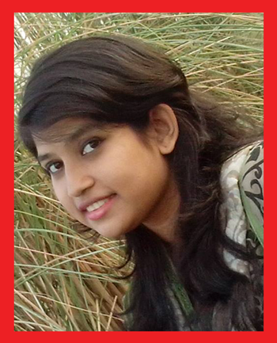

ORISHA FAREEN
SHOW : NON STOP, MOST WANTED
I am a friendly girl. I am pretty emotional too. But reality always gets priority to me. I love my family, but sometimes I like spending time alone.
Favourites
places : Sonargaon, Hatirjheel and many more yet to visit.
Songs : Ektara, sokhi bhavona kahare bole, balam pichkari, Allah ke bande. Darmiyan, a thousand years.
Hobby : collecting stamps and coins.
Games : Cricket and Ludo.
Artists : Bappa Majumder, Habib, Balam, Tahsan, Manna de.
Interests : Writing, bike riding, meeting new people.
Idol : My mother, Rabindranath Tagore, Humayun Ahmed.
Foods : Chotpati, Fooska, Chocolates, Pickles etc.
Hated things
Ignorance, fake people.
Philosophy of life
Life is hard to handle, but for me, some happy little things or moments can make it easier.